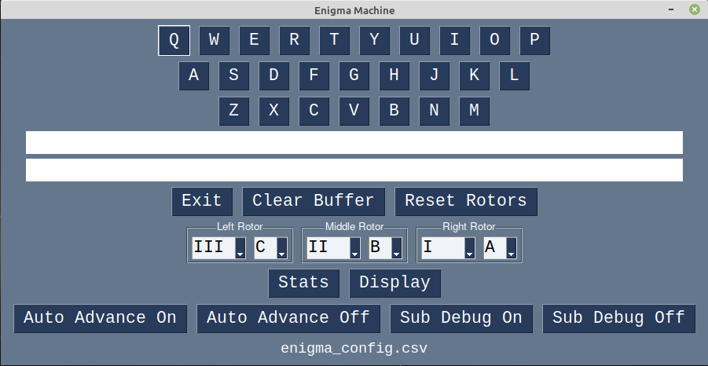

The file enigma_machine_w_gui.py
combines a GUI with the enigma machine simulation.
Below is a screenshot of the GUI.

This is the current version of the enigma machine simulation GUI (as of 11/23/2021).
There are "buttons" displayed that are used for debugging.
To remove them, edit the file enigma_gui.py.
Comment out or delete the buttons in the layout. I also suggest
leaving the event code for the buttons in the file
enigma_machine_w_gui.py. This way you can restore them later.
The debug buttons are: Stats, Display, Auto Advance On, Auto Advance Off, Sub Debug On, and Sub Debug Off.
Please note the configuration file used. It is at the bottom of the GUI window.